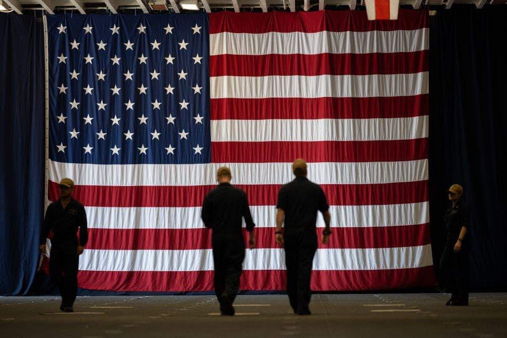

On Memorial Day, leave an empty seat at the table for the 'Missing Hero' who gave selflessly for our freedomsMemorial Day is the unofficial start of summer. Pools open. Grills are fired up. Hot dogs and burgers appear on menus. And as families prepare to pull out the paper plates and slice the watermelon, they may consider adding a simple tradition to make Memorial Day truly meaningful. Creating "The Missing Hero Table" — or setting an extra place and empty chair at the family table — is a way to remember the soldier who never came home. Memorial Day is more than just a three-day weekend, of course. It’s the federal holiday set aside each year to honor and mourn those who gave their lives for our country’s freedoms. (Veterans Day in November is the holiday during which we honor all veterans who served.) Those who made the ultimate sacrifice did it for all Americans — and they'd want us to enjoy the blessings of living in a free country, including be able to have backyard BBQs. For parents and caregivers, the classic social gatherings of Memorial Day are prime opportunities to teach both guests and children alike about the ultimate sacrifice. The single red rose, displayed in a vase, reminds us of the lives of these Americans and their loved ones. The "Missing Hero Table," as one Florida mom and patriotic American calls it (as a variation of the "Missing Man Table"), has several components that speak to the essence of Memorial Day. The War Memorial Center in Milwaukee, Wisconsin, explains each part of the tablescape in the following ways, as listed here. The table is round, to show everlasting concern for our missing men and women. The tablecloth is white, symbolizing the purity of their motives when answering the call to serve. The single red rose, displayed in a vase, reminds us of the lives of these Americans and their loved ones and friends who keep the faith while seeking answers. The red ribbon (tied around the base) symbolizes a continued determination on the part of Americans to account for our missing. The lighted candle reflects our hope for their return, alive or dead. A slice of lemon reminds us of their bitter fate — captured and missing in a foreign land. A pinch of salt symbolizes the tears of our missing and the families who long for them. The lighted candle reflects our hope for their return, alive or dead. The Bible represents the strength gained through faith to sustain us and those lost from our country, founded as one nation under God. The glass is inverted, symbolizing our missing loved ones' inability to share a toast. The chair is empty — the seat that remains unclaimed at the table. But doing the "Missing Hero" table perfectly isn’t the goal — just doing something is. For parents or family members busy with little ones or busy with hosting duties this weekend, or for those who can't make room for a special table on the to-do list, try what one mom in Florida does — just add one more place setting and an empty chair to the table. That’s enough to get her kids asking questions and to give her the opportunity to provide age-appropriate responses. One year, her four-year-old daughter interrupted her explanation of the day and asked, "Mama, what does ‘sacrifice’ mean?" The mom replied, "Sacrifice means giving up something you love for something you love more." Our fallen and missing servicemen and women loved our country more than they loved their own lives. That sparked a great conversation about what the family loved — and what they loved even more. Our fallen and missing servicemen and women loved our country more than they loved their own lives. They gave up their spots at their dinner tables so that all of us could enjoy ours. "Maybe an empty chair will be at your table this Memorial Day," said the mom in Florida. |
 |